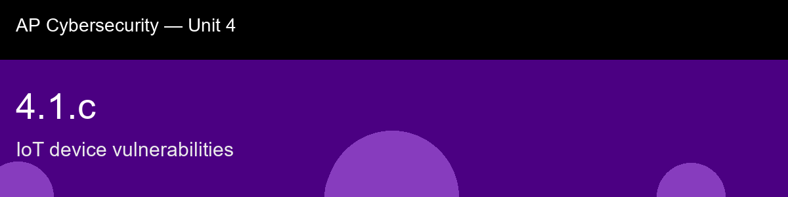

4.1.c, IoT device vulnerabilities
Before class today. The Internet of Things (IoT) is the broad category of everyday physical devices, cameras,
routers, thermostats, door locks, baby monitors, medical sensors, industrial controllers, that
connect to a network and, usually, to the internet. There are tens of billions of these devices
in use worldwide, and from a security standpoint they are collectively the softest target on the
modern network.
The intuition to hold onto: Don't memorize the IoT vulnerability list as five unrelated facts, notice they're all downstream of the same root cause: nobody thinks of a light bulb, thermostat, or doorbell as "a computer that needs security," so it never gets treated like one. The device has no screen to prompt you for a password change, no icon in your mental model of "things I should patch," and often no vendor still supporting it a few years in. Every weakness in this skill, default credentials nobody changes, firmware nobody updates, ports nobody closes, traces back to that one blind spot in how people categorize what counts as a computer.
A myth worth busting before we start: "IoT devices are too small or simple to be worth attacking." → False. Attackers rarely care about the device itself; they want it as a botnet node, a pivot point into the rest of the network, or a source of sensitive data (camera feeds, sensor logs). Scale, not sophistication, is what makes IoT attractive.
Today's goal: Explain why Internet of Things (IoT) devices carry unusually high risk, identify the specific vulnerability categories that make them easy targets, and classify a described smart device by its dominant weakness.
Handout: pre-lecture-handout.docx.

## 4.1.c, IoT device vulnerabilities
**Before class today.** The Internet of Things (IoT) is the broad category of everyday physical devices, cameras,
routers, thermostats, door locks, baby monitors, medical sensors, industrial controllers, that
connect to a network and, usually, to the internet. There are tens of billions of these devices
in use worldwide, and from a security standpoint they are collectively the softest target on the
modern network.
**The intuition to hold onto:** Don't memorize the IoT vulnerability list as five unrelated facts, notice they're all downstream of the same root cause: nobody thinks of a light bulb, thermostat, or doorbell as "a computer that needs security," so it never gets treated like one. The device has no screen to prompt you for a password change, no icon in your mental model of "things I should patch," and often no vendor still supporting it a few years in. Every weakness in this skill, default credentials nobody changes, firmware nobody updates, ports nobody closes, traces back to that one blind spot in how people categorize what counts as a computer.
**A myth worth busting before we start:** "IoT devices are too small or simple to be worth attacking." → False. Attackers rarely care about the device itself; they want it as a botnet node, a pivot point into the rest of the network, or a source of sensitive data (camera feeds, sensor logs). Scale, not sophistication, is what makes IoT attractive.
**Today's goal:** Explain why Internet of Things (IoT) devices carry unusually high risk, identify the specific vulnerability categories that make them easy targets, and classify a described smart device by its dominant weakness.
Handout: `pre-lecture-handout.docx`.